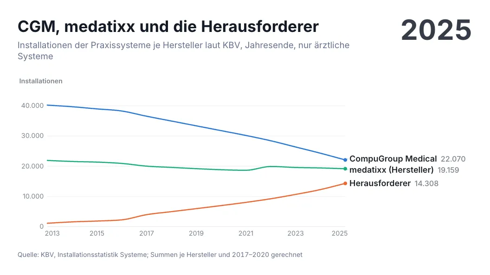
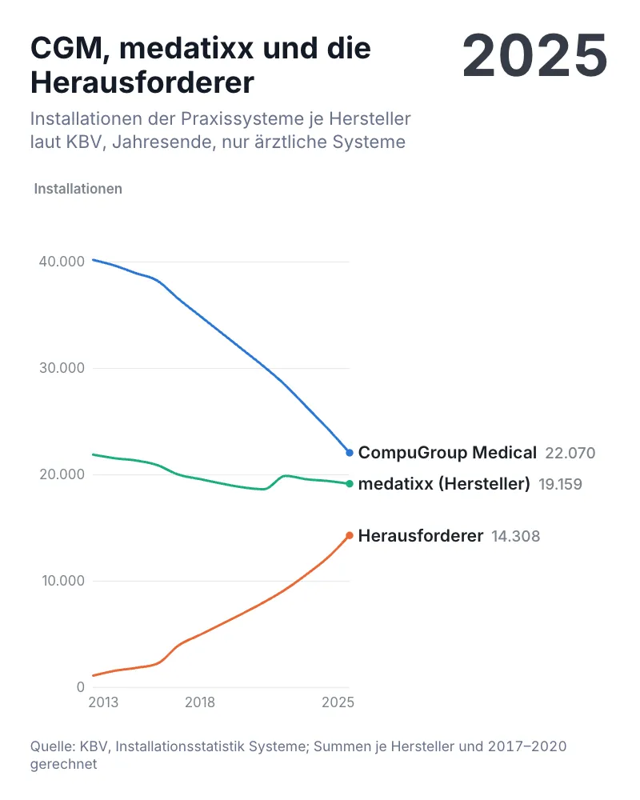

Praxissoftware-Hersteller: CGM, medatixx und die Neuen
CompuGroup Medical (CGM) ist mit 22.070 Installationen Ende 2025 der größte Hersteller von Praxissoftware für Arztpraxen, 32,4 Prozent der Installationen ärztlicher Systeme in der Statistik der Kassenärztlichen Bundesvereinigung (KBV). 2013 waren es noch 50,2 Prozent. medatixx liegt mit 19.159 Installationen bei 28,1 Prozent, und drei kleinere Anbieter – Medical Office, tomedo und T2med – kommen zusammen von 1,4 auf 21,0 Prozent.


Das Wichtigste in Kürze
- CGM verlor seit 2013 fast die Hälfte seiner Installationen ärztlicher Systeme: 40.206 auf 22.070. Jedes seiner fünf Systeme schrumpfte, TURBOMED um 52,1 Prozent, MEDISTAR um 35,3 Prozent.
- medatixx blieb bei gut einem Viertel: 21.896 (2013) auf 19.159 (2025). Der Anteil sprang 2022 von 25,9 auf 28,1 Prozent, weil medatixx im April 2022 Softland mit dem System EL übernahm; ohne EL läge er 2025 bei 26,0 Prozent.
- Medical Office, tomedo und T2med wuchsen von 1.122 auf 14.308 Installationen. tomedo und T2med gab es 2013 noch nicht.
- Die ärztlichen Systeme insgesamt zählen 2025 68.191 Installationen, 11.913 weniger als 2013.
Produkte täuschen, Hersteller zählen
Wer nur die einzelnen Systeme betrachtet, sieht CGM MEDISTAR seit Jahren auf Platz 1 und schließt auf einen stabilen Marktführer. Nach Herstellern gerechnet ist das Bild ein anderes: CGM besitzt mit MEDISTAR, TURBOMED, ALBIS, M1 PRO und DATA VITAL fünf Systeme, die alle Installationen verlieren. Die Gruppe kam durch Übernahmen zustande, MEDISTAR 2002/2003 und TurboMed Ende 2003.
medatixx entstand 2007 aus DOCexpert und MCS und führt die Systeme x.isynet, x.concept und x.comfort weiter. Seit 2014 baut der Hersteller ein neues Hauptprodukt gleichen Namens auf, auf das er seine Praxen nach und nach umzieht. Deshalb wächst das Produkt medatixx stark, während die älteren Systeme schrumpfen – für den Hersteller ist das ein Umzug, kein Gewinn.
Die eigentliche Verschiebung findet außerhalb der beiden Gruppen statt. Medical Office von INDAMED, tomedo von Zollsoft und T2med haben zusammen inzwischen mehr als jede fünfte Installation ärztlicher Systeme. In einzelnen Fachgruppen sieht es anders aus: Bei den Allgemeinmedizinern liegt medatixx vor CGM, siehe Praxissoftware der Allgemeinmediziner.
Was die Zahl nicht sagt
- Installationen sind keine Praxen. Die KBV zählt Abrechnungen mit der Prüfnummer eines Systems. Ein MVZ mit vielen Ärztinnen und Ärzten zählt wie eine Einzelpraxis; Hersteller mit Systemen für große Praxen erscheinen dadurch kleiner, als ihr Umsatz vermuten ließe. Was die Statistik genau misst, steht in Wer zählt die Praxissoftware?
- Eigentümer am Stichtag. Jedes System ist dem Hersteller zugeordnet, dem es am jeweiligen Jahresende gehörte. EL zählt deshalb erst ab 2022 zu medatixx.
- Ohne Psychotherapie und Klinik. Elefant, psyprax und die Krankenhaussysteme sind nicht enthalten; die Anteile beziehen sich auf die 28 ärztlichen Systeme mit mindestens einmal 500 Installationen seit 2013.
- 2017 bis 2020 sind gerechnet. Die KBV hat für diese Jahre nur Anteile in Prozent veröffentlicht.
Gerechnet
Die Herstellerlinien sind Summen der Systeme aus dem Datensatz zu Welche Praxissoftware Arztpraxen nutzen. Für 2017 bis 2020 sind die Systemwerte aus den KBV-Anteilen und einer linear gerechneten Gesamtzahl entstanden, für Systeme ohne veröffentlichten Anteil linear zwischen 2016 und 2021; die Methode je Wert steht in der Datenherkunft. Anteile sind auf die Summe der 28 ärztlichen Systeme bezogen.
Quelle und Methode
Kassenärztliche Bundesvereinigung, Installationsstatistiken der Praxisverwaltungssysteme, Jahresenden 2013 bis 2016 und 2021 bis 2025, ältere Berichte über das Webarchiv, abgerufen am 20. und 22. Oktober 2026. Übernahmen nach Deutschem Ärzteblatt und Herstellerangaben. Alle Systeme mit Herstellern und Schnittstellen-Zulassungen stehen in der Übersicht Praxisverwaltungssysteme in Deutschland.
Häufige Fragen
Welcher Hersteller hat den größten Marktanteil bei Praxissoftware?
CompuGroup Medical mit 22.070 Installationen in fünf Systemen, 32,4 Prozent der Installationen ärztlicher Systeme Ende 2025. Dahinter medatixx mit 19.159 (28,1 Prozent).
Gehören MEDISTAR und TURBOMED zum selben Hersteller?
Ja, beide gehören zu CompuGroup Medical, ebenso ALBIS, M1 PRO und DATA VITAL. MEDISTAR kam 2002/2003, TurboMed Ende 2003 zur Gruppe.
Welche Praxissoftware-Anbieter wachsen?
Medical Office (INDAMED), tomedo (Zollsoft) und T2med: zusammen von 1.122 Installationen Ende 2013 auf 14.308 Ende 2025.